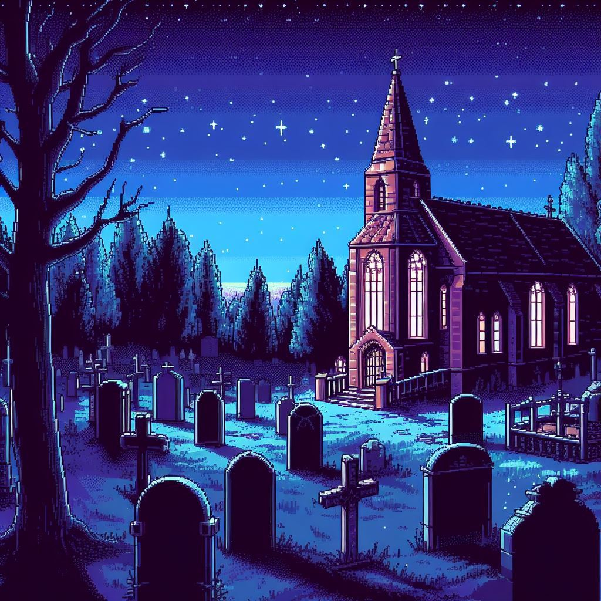
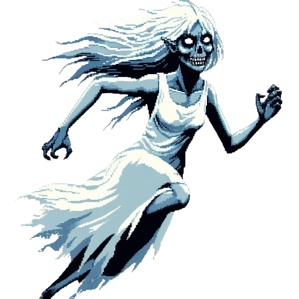
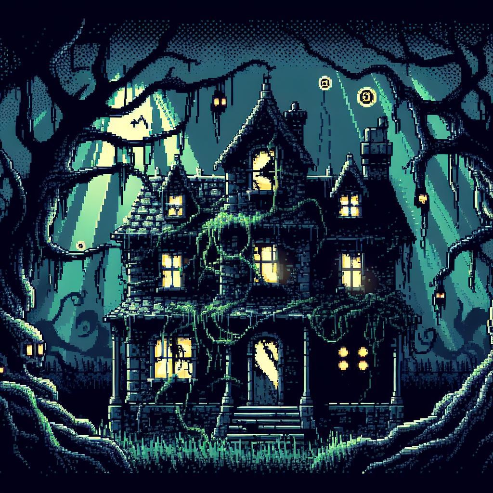

Para
Adventures
Esprits

Une fois arrivé dans le cimetiere vous aurez 2 choix : appareils ou question.
- Si vous utilisez questions :
- Si vous choississez l'appareils 3 :
- Allez vers le fond :
- Allez vers la chapelle :
- Voir les anciennes tombes :
- si vous choississez calme vous débloquerez une nouvelle fin.
- si vous choisissez provocatrice alors vous devrez affronter le fantome ou fuir.
Votre grand mère apparaitra et si vous allez la voir vous débloquerez une des fins possibles.
Vous avez trois choix :
qui vous permettera de récuperer une pelle
lorsque vous y arriverez vous aurez 2 choix : le premier est de rester, ce qui vous fera perdre et le second est de partir, ce qui vous fera rencontrer votre grand-mère décédée et provoquera l'une des fins possible.

ce qui vous demandera d'utiliser l'EMF.
Il faudra choisir entre une approche calme et provocatrice :
si vous gagné vous aurez débloquer une nouvel fin.
Créature
Une fois entré dans le manoir vous arrivez dans le salon.
Vous pourrez naviguer dans les différentes pièces du manoir à savoir :
- Le salon
- Le réfectoire
- La cuisine
- Le couloir
- La chambre
- La salle-de-bain
- La cave

Dans chaque pièce vous aurez 2 options : avancer ou inspecter.
- "Avancer" vous permet de vous déplacez dans les pièces adjacentes à votre position.
- "Inspecter" vous permet de trouvez des armes ou objets afin de progresser dans votre exploration.
- De trouver une serrure dans le salon.
- De trouver un code sur la table dans le réfectoire.
- De trouver une baguette dans l'évier de la cuisine.
- De trouver une épée dans la chambre.
- De trouver un masque filtrant dans la salle-de-bain.
- De trouver un coffre fort dans le four dans la cuisine (masque requis).
- D'ouvrir la serrure dans le salon grâce à la clé trouver dans le four dans le salon.
Cette dernière option vous permet :
Ce qui se trouve au-delà de cette porte secrète ne tient qu'à vous d'être découvert.